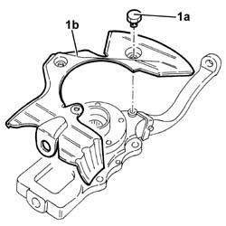
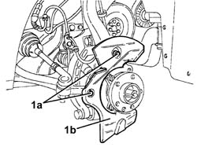

3010A59 front brake disc guard - r r
- Path
- Procedures > 33 BRAKING SYSTEM > 3310 DISC BRAKES > 3310A FRONT DISC BRAKES > 3010A59 front brake disc guard - r r
- Kind
- repair procedure (removal / refitting; the operation number is the code)
- Applies to
- all engines; all production periods
- Interactive page
- https://sloeber94.github.io/elrnDB-a156/en/#/3238039
Applies to: all engines; all production periods
 Removing
Removing
 Refitting
Refitting1. Undo the bolts (1a) and remove the front brake disc shield (1b) from the front vertical link.

Applies to: all engines; all production periods
Refitting
RemovingFit the front brake disc shield on the vertical link and secure it with its bolts.
Applies to: engines: 3.2 V6; all production periods
Removing
RefittingPosition the vehicle on the ramp.
Ensure that the ignition key is in OFF position, then disconnect the battery negative terminal (-).
 | Name | Connector |
|---|---|---|
- | Battery |
Proceed with removal 4450B10 Front WHEEL (one) - R.R. .
Proceed with removal 3310A30 FRONT BRAKE CALIPER (one) - R.R. .
Proceed with removal 3310A48 front brake disc - r r .
1. Undo the bolts (1a) and remove the front brake disc shield (1b).

Applies to: engines: 3.2 V6; all production periods
Refitting
RemovingPlace the front brake disc shield back in its housing and fix it using the bolts.
Proceed with refitting 3310A48 front brake disc - r r .
Proceed with refitting 3310A30 FRONT BRAKE CALIPER (one) - R.R. .
Top up the brake-clutch fluid level - 0010T64 brake and or clutch fluid check level and top up as necessary .
Bleed the air from the hydraulic braking system 0010T65 hydraulic brake system bleed air .
Proceed with refitting 4450B10 Front WHEEL (one) - R.R. .
Connect the negative (-) battery terminal.
Remove the car from the ramps.